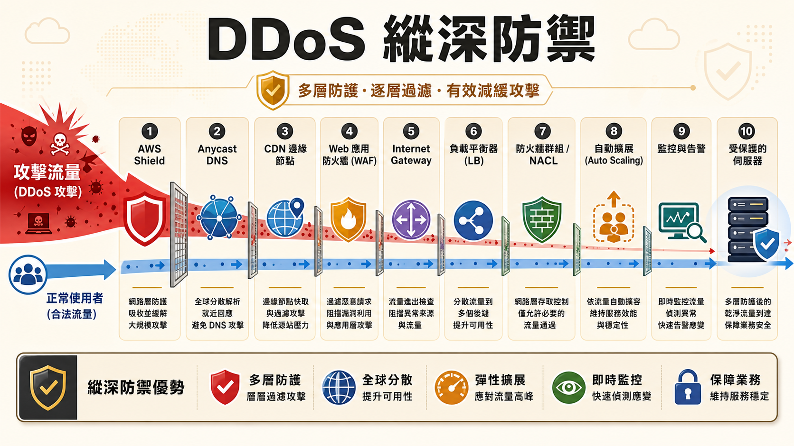
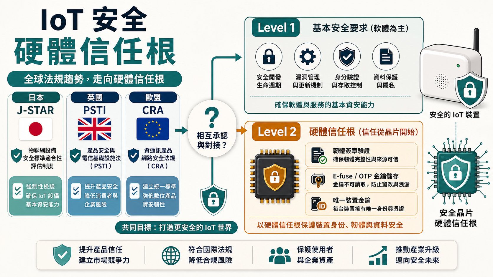
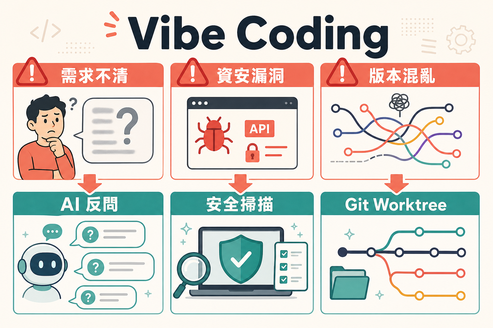
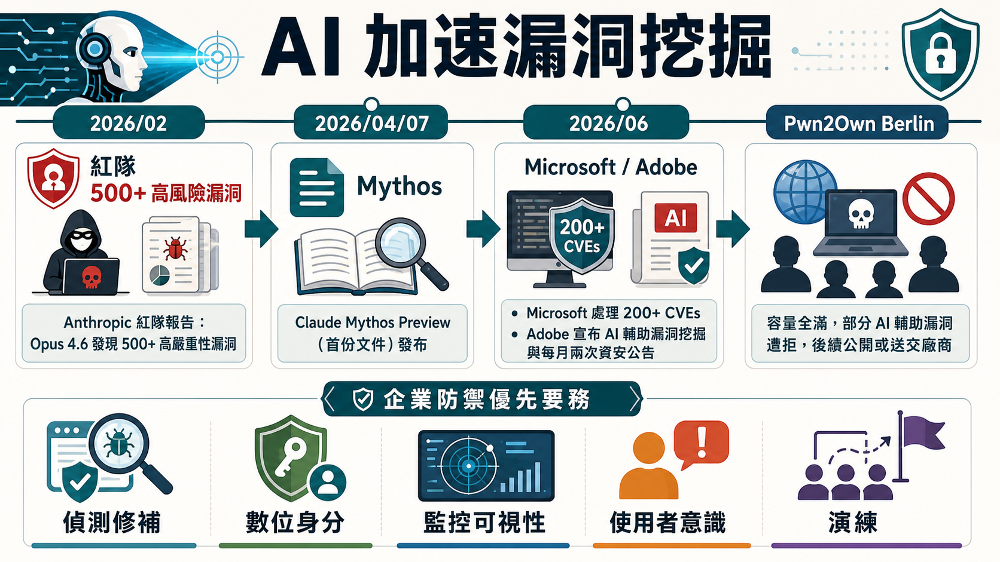
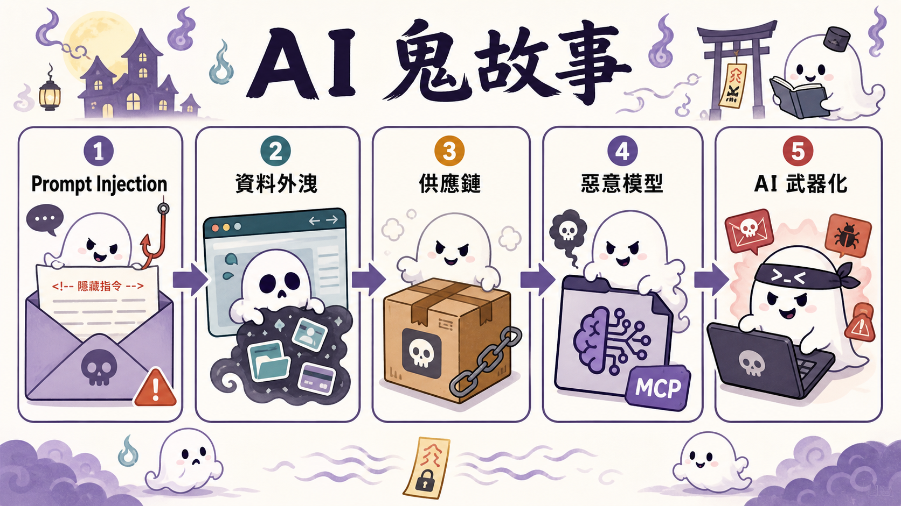
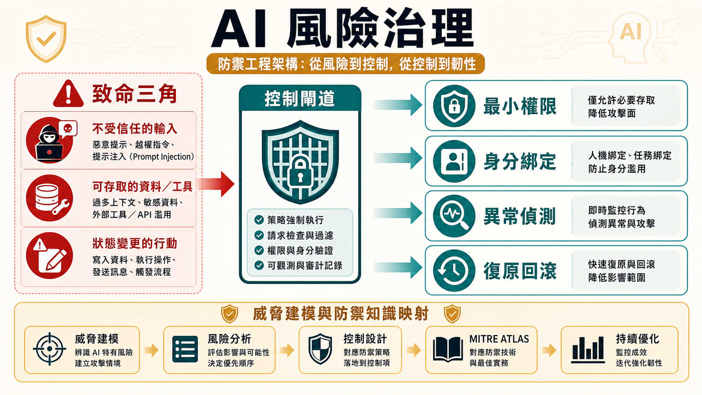
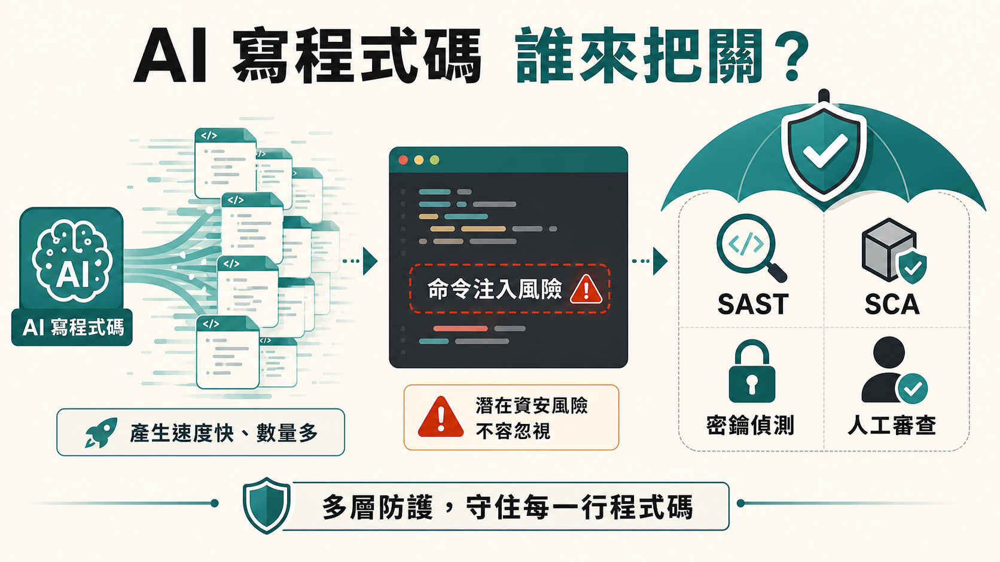
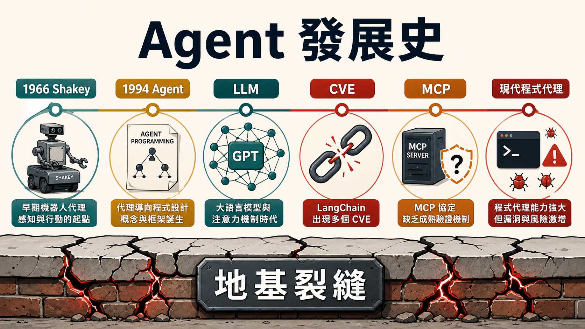
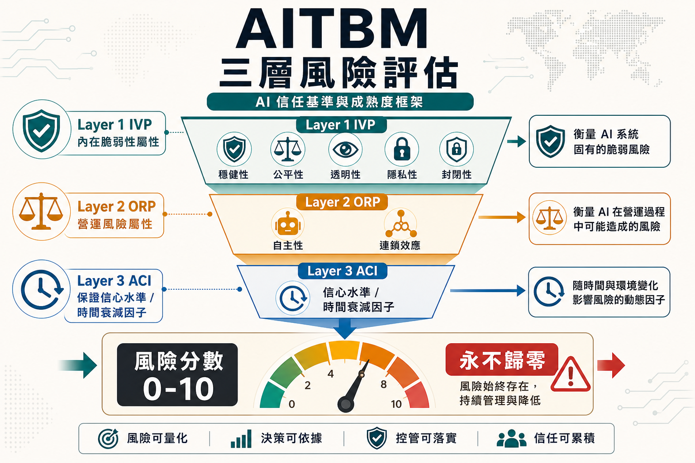

留言板五分鐘湧入兩百封信，兩個月被同一招打了四次
某個平常日的深夜，一個不起眼的公司官網留言板，五分鐘內收到兩百多封信。不是業績暴衝，是機器人把留言板當成信箱轟炸機，一次次填表、一次次觸發系統自動寄信，直到留言額度被塞爆、正常客戶再也收不到回音。講者是資安圈老手，但這次被打的不是什麼關鍵基礎設施，只是他自己的公司官網——而他被同一招打了四次，每次都手動即時封鎖後，才決定改寫自動封鎖規則。
這正是 DDoS 最讓人心累的地方：它從來不需要多高深的技術，只需要比你更有耐心。多一個「D」，代表攻擊者不是一個人在戰鬥，而是把攻擊拆成成千上萬份，分散在你猜不到的來源上——分散到連黑名單這種最原始的防禦手段都追不上速度。
如果把 OSI 七層攤開來看，會發現一件更打臉的事：真正會被拿來做阻斷攻擊的，其實只有四層，套路來來去去也就是那幾種——碎片重疊讓你重組失敗、把回應放大幾十倍反過來灌爆你、佔滿連線數讓真正的客人擠不進來、逼你不斷重複昂貴的加解密交握。這些手法沒有一個是新發明，Ping of Death、Smurf、SYN Flood，都是網路教科書等級的老古董，只是換了個更大的規模重新上場。而攻擊者要做的，往往只是找到一個你沒設防的節點——一台被駭的智慧牙刷，一個公開曝光的物件儲存桶——就足以把帳單燒到讓你肉痛。
真正值得記住的，反而是防禦這一側的心態轉變：沒有人指望用一道牆擋下所有攻擊，防禦的目標從「阻擋」變成「消耗」。雲端服務商把攻擊者要面對的關卡疊了十一層——邊界防護、Anycast 化的 DNS、CDN 吸收流量、WAF 過濾應用層攻擊、負載平衡分散連線、雙層防火牆、自動擴容稀釋衝擊，最後才是人工告警。每一層擋不住的部分，交給下一層繼續消耗，而不是賭一次性攔截。這種思路換到防守方的日常實務，就是最小權限、縱深防禦、速率限制、自動化黑名單這些老生常談——重點不在單一措施多聰明，而在於攻擊者要付出的代價，是否遠遠超過你設防的成本。
對地端機房而言，這個故事的殘酷結論是：你幾乎不可能複製雲端業者那十一道關卡的規模與韌性。這不是要你放棄防禦，而是提醒你——選擇把流量出口交給有能力做流量清洗與全球節點分散的服務商，本身就是一種資安決策，而不是純粹的技術選型。
技術流程解析：DDoS 縱深防禦十一道關卡
下方為桌機橫式與手機直式流程圖（依螢幕寬度自動切換方向），呈現攻擊流量如何被逐層消耗：

一支智慧牙刷連上網路，成為殭屍軍團的一員
一支智慧牙刷連上網路，本身已經夠荒謬；當它被木馬感染、成為攻擊某個網站的殭屍大軍成員之一，事情就不再是笑話了。全球有數以百萬計的 IoT 裝置就長這樣：出貨快、更新慢，往往很快就會掛上第一個 CVE。講者不是在講抽象威脅，他是站在製造商第一線——Panasonic 的資安工程師——親手替聯網裝置設計安全機制的人。
問題不只在裝置本身脆弱，而在於全世界正用完全不同的方式定義「安全」。英國有 PSTI，歐盟有 Cyber Resilience Act，日本有 J-STAR，各國各寫各的規範，要求彼此還不盡相同。對一家想把產品賣到全世界的製造商來說，這意味著同一支裝置要重複認證好幾次，成本疊加卻換不到對等的信任——這就是講者口中「認證一次、到處都不算數」的困境。日本政府與英國、新加坡陸續簽署的相互承認協議，是想解開這個死結，但目前像日新協議也只是雙向但局部的承認，離真正的「一次認證、全球通行」還有很長的路。
比法規落差更值得資安圈注意的，是這場演講揭露的技術現實：IoT 安全正在從「軟體層面湊合」走向「硬體級信任根」。第一代基本要求還停留在「不要用預設密碼」這種低標，但下一代規範已經要求韌體必須經過硬體簽章驗證、金鑰要存放在 E-fuse 或 OTP 這種燒錄後無法竄改的區域、每一台裝置都要有獨一無二的身分金鑰。換句話說，過去屬於高階伺服器與行動裝置的安全等級——可信賴根、裝置身分、韌體簽章——現在正被要求下放到每一支牙刷、每一台路由器、每一顆攝影機。這對台灣的 IC 設計與 ASIC 供應鏈而言，既是壓力也是機會：講者直言自己每次來台灣，都是為了跟台灣廠商討論如何把這些硬體安全機制真正做進晶片裡。
從治理的角度看，這其實是攻防之外更根本的一課：當攻擊面已經擴大到每一顆聯網晶片，光靠事後修補永遠追不上量體，唯一的解法是把信任機制往硬體層下推、往供應鏈上游前移。對台灣的硬體產業來說，這不只是接單題，更是決定未來能不能站上國際供應鏈信任鏈條上游的關鍵一役。
技術流程解析：J-STAR 認證與國際相互承認
下方為桌機橫式與手機直式流程圖（依螢幕寬度自動切換方向）：

帥哥遊戲第一版跑出來，右上角卻是個紅髮雙馬尾
一句「幫我做一款以資安 CTF 帥哥為主題的乙女遊戲」，AI 給出的第一版成品，卻是日英夾雜的謎樣畫面，配上一個誰都沒點名要的紅髮雙馬尾角色。這個帶點自嘲的開場，是這場分享裡最誠實的部分：AI 寫程式的門檻已經低到任何人都能一句話下單，但拿到手上的成品，往往離心裡想的樣子還很遠。
真正的問題不是 AI 寫不出漂亮的畫面，而是講者自己也說不清楚需求。想清楚要什麼之前就開始生成，只會得到一堆看起來能動、卻完全不是那回事的產出。於是問題一路往下滾：漏洞不需要登入就能直接打 API 拿到答案、CSP 設定形同虛設、過度設計出一堆用不到的分支邏輯——畫面光鮮亮麗，底下全是還沒被戳破的漏洞。更麻煩的是版本控制的災難：AI 產出程式碼又快又猛，一個 PR 裡塞了三個功能，沒人看得懂它到底改了什麼，未來想追一個 bug，等於在垃圾堆裡尋寶。
這些問題背後其實是同一件事：人類把判斷力外包給了 AI，卻沒有同步外包驗證的責任。解法也不是排斥 AI，而是把開發流程重新拆解——先讓 AI 反過來逼問自己，直到答不出來為止，逼自己把需求想清楚；用 Git Worktree 讓每個功能各自獨立開發，避免糾纏成一團髒亂的提交記錄；把一份良好的 commit message 當作最基本的溝通禮貌，而不是隨便打上「Test 123」交差了事。
從防禦的角度看，這場分享其實是把資安圈老生常談的道理，重新套進 AI 協作的情境裡講了一次：任何自動產出的程式碼都不該無條件信任，靜態掃描、密鑰偵測、人工審查，一樣都不能少；rm -rf 這類刪除操作、快速修復類的補丁，永遠是人工審查優先盯防的節點。AI 不會因為寫得快就自動變安全，人類把關的責任，反而在自動化程度越高的時候越不能鬆手——這正是「human in the loop」這句話最實際的意義：出事的時候，永遠只有人能背這個鍋。
技術流程解析：從模糊需求到並行開發
下方為桌機橫式與手機直式流程圖（依螢幕寬度自動切換方向）：

一份紅隊報告，一個月揪出五百多個高危漏洞
一份紅隊報告，一個月內揪出五百多個高風險漏洞，規模是過去從未見過的量級。這不是虛構的威脅預言，而是講者引用的真實紅隊評估結果——AI 模型被拿來大規模挖漏洞，而且做得比人類團隊更快、更多。約兩個月後，同樣的能力被公開討論成「意外的驚喜」，但講者反問全場：這真的是意外嗎？信號其實早在一月、二月就已經出現，只是願意花時間讀完原始報告的人太少，多數人只是在追逐標題與二手轉述。
這場演講的核心觀察很刺耳：AI 沒有讓每個攻擊者都變厲害，卻讓原本技術不足的攻擊者，突然擁有了接近專業等級的破壞力。同時，AI 本身作為一套電腦系統，也繼承了資安圈幾十年來從未真正解決的老問題——帳號被盜用、供應鏈污染、MCP 服務部署得毫無防備——這些漏洞的本質，跟十年前網管每天在處理的東西並沒有太大不同，只是換了個 AI 的外衣重新登場。
面對這樣的加速度，講者提出的核心原則出奇地樸素：不是要更多工具，而是要更敏銳的可視性、更快的行動、以及真正演練過的應變流程。數位身分管理與監控可視性，被他反覆點名為當下最大的兩個挑戰——尤其是 MCP 這種新協定的部署現況，講者直接放話挑戰在場任何一位 MCP 部署者：你真的把安全考慮進去了嗎？企業對外暴露的資產清單、事件應變計畫、業務持續計畫，都必須用比過去更高的頻率重新檢視，因為攻防雙方的節奏，都已經被機器速度重新定義。
最發人深省的收尾，是一個逆向思考：防禦者本身也應該學會用 AI 找出自己的弱點並修補起來。這不是口號，而是把「加速」這件事，從純粹的威脅重新定義成防禦者也能運用的槓桿——加上像講者提到的 Starbucks 案例，提醒我們必須正視現實中潛在的威脅邏輯。只要組織願意誠實面對一件事：光是把新技術裝上去，卻不去驗證它是否真的照你的意思運作，本身就是最大的風險來源。
技術流程解析：AI 加速漏洞挖掘時間軸
下方為桌機橫式與手機直式流程圖（依螢幕寬度自動切換方向）：

一個 MCP 套件，前十五版乾淨，第十六版才藏毒
一個 MCP 套件，連續發布十五個版本都乾乾淨淨、什麼問題都沒有，直到第十六版才悄悄藏進一行惡意指令，把使用者的資料整批送到攻擊者信箱。這不是理論推演，是真實發生過的事件——講者把它命名為「鬼故事」，因為這些事故共同的特徵就是：你以為看得見的東西，其實早就被動過手腳。
這場分享的骨架，是一條從講者稱為 Zero Click Haunting 一路延伸到 2026 年的攻擊鏈：先是 prompt injection 把惡意指令混進看似無害的輸入；接著模型自己也分不清楚哪些是系統指令、哪些是外部資料，因為所有東西進去之後都只是一串 token；最後在 agentic 時代，資料外洩已經不需要人類動手，AI 代理程式會主動幫攻擊者把東西送出去。Copilot 自動回信與 OneDrive 資料外洩、Salesforce AgentForce 被一次對話操縱造成三百萬美元損失、ChatGPT 的 Deep Research 功能把郵件裡藏的指令當成可信輸入執行——這些案例串起來，指向同一個結構性問題：資料與指令之間，從來沒有一條真正的邊界。
更讓人不安的是供應鏈層面的鬼故事：NX 套件的惡意 GitHub Actions 一次外洩上千組 token 以及 2300多個 secret 和 2萬多個檔案；Hugging Face 上的模型被塞進壓縮包裡的一行惡意指令，在下載執行的瞬間引爆；連 DeepSeek 上線初期都曾經把整個資料庫直接曝露在公網上，任何人都能看到別人送進去的對話內容。講者提醒的重點不是叫大家別用這些工具，而是：企業版的隱私承諾永遠是有條件的——metadata 仍然會被收集，因為訓練資料終究會枯竭；企業要嘛付更多錢，換取廠商開一個特殊開關、承諾你的資料不被拿去訓練，要嘛就任由自己的資料被收集去餵養下一代模型。
最後留給防禦端的答案，其實跟資安圈千年不變的原則一致：資料與指令的邊界要明確定義、外洩通道要被明確控管，不要把工具和來源隨意放進允許清單；即使是信任來源，也要有拒絕規則、審核機制與可驗證的代理程式身分，重大變更前更要有人核准。而那句被講者反覆強調的話最值得記住：Guardrail 從來就能被繞過，它保護的是普通使用者，而不是真正想突破的人——所以資安的重點，永遠不該只押注在單一一道防線上。
技術流程解析：AI 鬼故事五段攻擊鏈
下方為桌機橫式與手機直式流程圖（依螢幕寬度自動切換方向）：

矽谷信奉快速迭代，金融業信奉一切都能被驗證
矽谷的信條是「fail fast」——動得越多、迭代越快，才是文化裡的正確答案。但講者曾在摩根大通做資安經理，那個世界的邏輯完全相反：任何新技術上線之前，先問是誰授權執行的、動用了什麼權限、資料會不會外洩、出事之後要怎麼復原。兩種文化的碰撞，正是這場演講的起點——當快速迭代的矽谷產品思維，撞上金融業要求一切都能被驗證留存的治理邏輯，AI 資安真正該解決的問題，早已不是模型會不會講錯話，而是行動的權限、資料的邊界、以及出錯後果，是否都可以被控制。
演講點出一個常被誤解的關鍵：prompt injection 已經不是過濾器能解決的問題。因為在語言模型裡，系統指令、外部資料、使用者輸入，最終都被打散成同一種 token，模型根本無法從結構上分辨哪個該信、哪個不該信——而攻擊者只要換一個同義詞，過濾規則立刻失效。真正該做的不是堵住每一種說法，而是從架構上限制傷害範圍：最小權限、身分綁定、執行期異常偵測、事後可撤銷的復原機制，這四件事合在一起，才是新一代防線的骨架。
演講進一步點出企業部署 agentic AI 時最危險的組合——「致命三角」：同一個 agent session 若同時擁有不受信任的輸入、可觸及的資料與系統、以及能改變狀態的能力，三者疊在一起，破壞力就會失控。MCP 協定的普及讓這個風險更放大：任何一個 MCP 服務背後的供應商是否值得信任，往往無從查證，而過去發生的惡意 MCP 事件已經證明，攻擊者只需要在十五個乾淨版本後，藏進第十六個版本裡的一行惡意程式碼。加上 RAG 與長期記憶讓知識庫本身也成為新的攻擊面——資料一旦被污染，可能潛伏很久都不會被發現，直到某天造成的損害才被追溯回來。
治理面的解方，講者提出的是一套可驗證的思路：把 AI 風險轉譯成可落地的防禦技術庫，對應到 MITRE ATLAS 這類既有威脅框架，讓每一種攻擊手法都能找到對應的緩解措施。這正是攻防一體最直接的體現——下一代 AI 資安防線的重點，不再是讓模型「更聰明」，而是讓每一個行動、每一次資料存取，都能被驗證、被追溯、被妥善控制。
技術流程解析：AI 資安五大防線
下方為桌機橫式與手機直式流程圖（依螢幕寬度自動切換方向）：

連工具創辦人自己都說：我已經不太寫自己的程式碼了
連某個 AI 編碼工具的創辦人 Peter 自己都坦承：「我已經不太寫自己的程式碼了（像我用 OpenClaw）。」這句話放在演講開頭，比任何統計數字都更刺耳——當開發者從寫程式碼，變成單純描述需求讓 AI 去產出，整個開發流程收斂成一個人就能完成從建置到維運的全部工作，效率暴增的同時，「有沒有人真的在檢查這些程式碼」，反而成了沒人願意正視的問題。
講者從資料庫挖出的數字很直白：某個熱門 AI 編碼工具半年內被回報約八百次（GitHub 800次、MITRE 500次）安全通報，平均每個月一百到一百五十份報告。他用一個經典的 CWE-78 命令注入案例說明：AI 被要求「列出使用者資料夾裡的檔案」，攻擊者只要把使用者名稱換成一段刪除全部檔案的指令，AI 完全無法判斷這段輸入本身是否安全——它只是照做，因為它從來就不具備判斷程式碼有沒有漏洞的能力。
回顧從 2015 年到現在的編碼工具演進，會發現一件有趣的事：真正的門檻從來不是模型能力，而是人類習不習慣用自然語言下指令。連 MIT、哈佛的學生都曾在同一堂課裡，花最多時間學的不是模型本身，而是怎麼跟 Cursor 與 Windsurf 這類工具「對話」——這也解釋了為什麼 2025 年之後，Vibe Coding 會突然變得人人都能上手：門檻跨過去了，而不是技術突然變強。但工具普及的速度，明顯快過安全意識建立的速度——現在有多少人真的知道，自己用的 AI 編碼工具，內建了哪些安全檢測能力？
演講給出的答案不是拒絕使用這些工具，而是把既有的安全工具鏈重新盤點一次：SAST 做污點分析找出從輸入到危險操作的路徑、SCA 檢查相依套件是否帶有已知漏洞、密鑰偵測避免 API Key 被意外寫進程式碼並推上 GitHub。像 Claude Code 這類工具其實已經內建 Semgrep Guardian 等防護能力，也有近 22 個安全外掛可供安裝——問題往往不是工具不存在，而是使用者根本不知道要去啟用它。這正是攻防一體最實際的提醒：AI 幫你寫了一百萬行程式碼，但把關的責任，從來沒有被自動化這件事本身取代過。
技術流程解析：CWE-78 命令注入與防護工具鏈
下方為桌機橫式與手機直式流程圖（依螢幕寬度自動切換方向）：

一美元賣掉一輛雪佛蘭，法院判決代理人的話得算數
一個聊天機器人被拿去扮演客服，結果被誘導用一美元賣出一輛雪佛蘭休旅車；另一個航空公司的客服代理，因為自己編造出一條不存在的優惠條款，法院最後判決航空公司必須依照代理講的話兌現賠償。這些真實案例聽起來荒謬，卻精準指出這場演講的核心命題：所謂 AI Agent，遠沒有大家以為的那麼神秘與複雜，但正因為被過度擬人化，才讓人放心地把它們沒有的判斷力，錯當成真的存在。
講者拆穿了一個業界迷思：Agent 的本質，就只是把語言模型放進一個迴圈裡呼叫、解析輸出、呼叫工具、把結果丟回上下文，整套程式碼可能不到二十行。真正決定 Agent 表現好壞的，從來不是外面包的那層框架有多花俏，而是模型本身有沒有被訓練成懂得怎麼當一個 Agent——這件事早在 1966 年的機器人 Shakey、1994 年 Shoham 提出的 agent-oriented programming 論文裡就有雛形，只是當時的自然語言處理能力太弱，撐不起後來的想像。真正的轉捩點是強化學習迴圈的成熟：讓模型反覆做題、對照單元測試是否通過，一次次修正權重，這種訓練方式比任何精巧的工程框架都更能決定 Agent 的實戰表現。
從安全的角度看，這段歷史留下的教訓格外諷刺：LangChain 在 2022 到 2023 年間因為一個被遺忘的執行漏洞爆出 CVE 9.8 的高危事件，而 GitHub Copilot 的 Pull Request 執行機制也存在類似問題——只要有人能在你的儲存庫裡塞進一個惡意 PR，你的 CI/CD 就可能替他跑起惡意程式碼。同時，也有模型因為 prompt injection 被誘導偷取 PDF 資料。MCP 協定推出時甚至連基本的身分驗證流程與 Agent 身份都沒有，只支援明文 HTTP。這些問題不是新鮮事，是同一套「相信輸入內容」的老毛病，換了個舞台重新上演。
講者給出的解方直白到近乎冷酷：prompt injection 永遠無法被完全修補，任何號稱萬能的 guardrail 都不值得完全信任。真正該做的是把 Agent 拆得又小又窄——嚴格限定它能碰的工具與資料範圍，用「假設已經被攻破」的心態去設計每一個節點，而不是妄想用一道護欄擋下所有惡意輸入。這正是攻防一體最赤裸的體現：地基本來就有裂縫，真正的防禦不是假裝地基完好，而是設計出即使地基裂了，房子也不會整棟倒下的結構。
技術流程解析：Agent 發展史時間軸
下方為桌機橫式與手機直式流程圖（依螢幕寬度自動切換方向）：

同一套 AI 系統，兩位評估人員給出天差地遠的風險分數
問同一套 AI 系統「這東西到底有多危險」，找兩位不同的資安評估人員來看，答案可能天差地遠——這不是因為誰的專業不夠，而是因為現有的評估框架，說到底都建立在評估者的主觀判斷上。這正是這場全日壓軸演講要處理的根本問題：當企業開始把 Agent 大量推上生產環境，光靠「感覺」來評分風險，已經不再是能被接受的做法。
講者花了將近一年時間，親手打造出 AITBM（AI Trust Benchmarking and Maturity Framework），起點是一個簡單但尖銳的觀察：CVSS 這類傳統評估架構，是為了評估「某個時間點發生的單一弱點」而設計的，而 AI 系統的風險本質完全不同——同一個模型的底層邏輯可能從未改變，但只要重新訓練資料不同、使用方式不同，風險就會以全新的樣貌重新冒出來，而且永遠不會被「一次性解決」。OWASP Top 10 是拿來做教育的，不是評分架構；多數既有框架擅長指出問題在哪裡，卻沒有回答這個問題該如何被系統性地處理。
AITBM 的設計刻意違反直覺的一點是：風險分數永遠不會歸零。因為沒有一套資安系統是絕對安全的，把分數設計成理論上可以達到滿分安全，本身就是一種危險的自我欺騙。整套框架拆成三層評估：第一層看系統本身的固有弱點（穩健性、公平性、透明度、隱私、封閉程度），第二層看部署到實際環境後的營運風險（自主程度、串聯效應），第三層則是這套框架最特別的部分——把時間因素也算進風險分數裡，因為 AI 的風險不會像傳統弱點一樣「修補完就結束」，而是會隨著時間、隨著重新訓練，用不同的樣貌反覆出現。講者甚至用 DeepSeek 中國模型對台灣議題的立場落差（當被問及「台灣總統是誰」時回答「台灣並非獨立國家」）舉例，說明模型的公平性判斷本身就充滿不穩定與可操縱性。
這場演講與其說是在推銷一套新標準，不如說是在提出一個治理原則：與其斷言某套系統「值得信任」，不如老老實實地去衡量它到底有多不確定。AITBM 刻意把自己定位成與 OWASP、MITRE ATLAS、NIST 框架互補、而非取代——這也呼應了整個 InfoSec Taiwan 兩天議程反覆出現的主軸：信任的邊界正在被重新定義，而定義它的方法，不該只靠一個人的直覺判斷。
技術流程解析：AITBM 三層風險評估架構
下方為桌機橫式與手機直式流程圖（依螢幕寬度自動切換方向）：